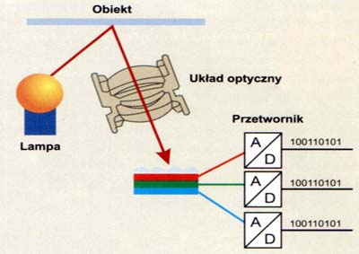

Urządzenia wejścia
Skaner
Skaner
Przekształca optyczne informacje na komputerowe dane; za pomocą czujników bada kolor i jasność odczytywanego obrazu; po przekazaniu informacji o obrazie do komputera można je w dowolny sposób modyfikować.
wielkość obszaru skanowania,
rozdzielczość optyczna (mierzona w DPI) - gęstość elementów światłoczułych na listwie przesuwanej nad skanowaną ilustracją; im jest ich więcej, tym więcej szczegółów jest w stanie wychwycić; rozdzielczość podawana jest w postaci dwóch liczb (np. 300x600 dpi.); pierwsza z nich odnosi się do liczby elementów skanujących znajdujących się na jednym calu powierzchni elementu; każdy z takich elementów tworzy jeden piksel informacji w osi poziomej; druga liczba oznacza odległość (lub krok), o jaką ramię przesuwa się pomiędzy ekspozycjami. Liczba 600 dpi oznacza więc że każda nowa próbka jest tworzona co 1/600 cala.
głębia kolorów - ile bitów informacji potrzebnych jest do opisania koloru punktu w standardzie RGB - im większa jest to liczba, tym więcej kolorów skaner potrafi rozróżnić, np.:
| GŁĘBIA [bit] |
ILOŚĆ KOLORÓW |
| 1 |
2 |
| 8 |
256 |
| 16 |
65 536 |
| 24 |
16 777 216 |
rozdzielczość interpolowana - umiejętność sztucznego podwyższania rozdzielczości otrzymywanego obrazu cyfrowego; między wczytane punkty obrazu wstawiane są kolejne, których jasność i kolor wyliczone są przez program na podstawie wartości punktów sąsiednich, zwiększanie rozdzielczości interpolowanej zwiększa wielkość ilustracji, lecz obraz nie zawiera przez to więcej szczegółów.

Aparat cyfrowy
Nie potrzebuje filmu fotograficznego; docierający do niego obraz trafia na matrycę LCD lub CMOS, gdzie jest przetwarzany i zapisywany w postaci cyfrowej (zazwyczaj na karcie pamięci Flash). Najważniejsze parametry:
rozdzielczość (wielkość matrycy),
technologia CCD lub CMOS,
zoom optyczny i cyfrowy.
Powrót